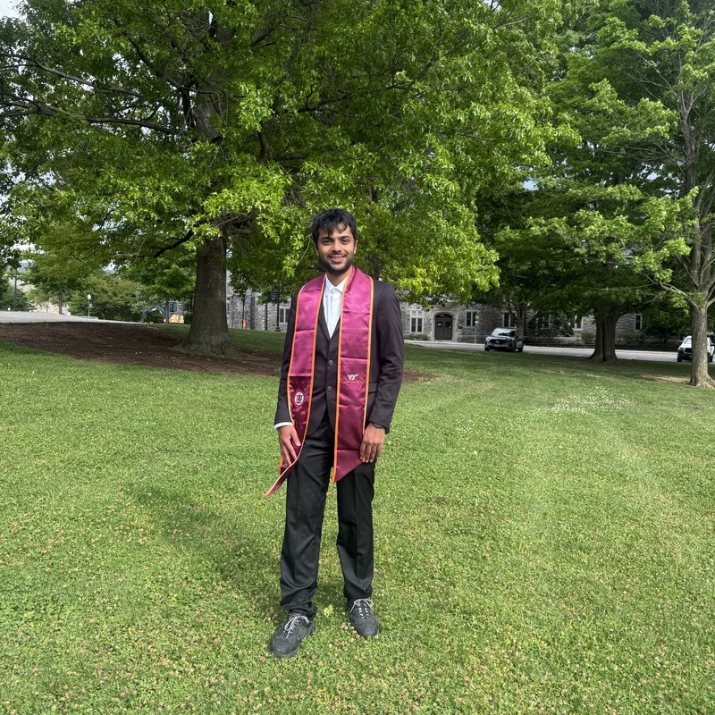

MS Computer Engineering @ Virginia Tech. I work across AI/ML, data, and security - building LLM systems and agentic RAG, engineering reliable data pipelines and analytics, and bringing a cybersecurity-first lens to everything I ship.
I'm a computer engineer focused on building AI systems that are safe and privacy-preserving by design - never as an afterthought. My MS in Computer Engineering at Virginia Tech deepened my work in LLM fine-tuning and hallucination mitigation, while my background in cybersecurity and GRC trained me to treat data protection, risk, and compliance as first-class requirements.
That combination shapes how I build. At Wipro I ran 140+ cloud and cybersecurity risk assessments and built the controls and dashboards teams relied on; as a Graduate Teaching Assistant I evaluated secure data systems against compliance and risk principles - reinforcing that trustworthy data handling is what makes AI usable in production.
Above all, I deliver reliable, data-driven solutions that move business outcomes - turning models and data into measurable impact. I care deeply about evaluation: every project here ships with real, measured numbers, and I aim to build AI that organizations can trust with sensitive data and real decisions.
Not a generalist spread thin - each area below is backed by shipped, measured work and maps to the exact roles I'm hiring-ready for today.
Flagship work below, plus a live feed of my latest GitHub repositories.
ProblemLLMs answering questions over dense financial filings hallucinate and cite nothing - unacceptable in a finance setting.
ApproachBuilt a 5-node LangGraph agent (retrieve → grade context → rewrite/loop → generate → self-check) over a Chroma/pgvector store with Hugging Face embeddings - top-8 retrieval re-ranked to top-3 - served behind async FastAPI with token streaming.
ImpactGrounds every sentence in cited passages and abstains when unsupported, validated on a 20-question gold set of answerable and deliberately unanswerable cases.
ProblemBase Qwen2.5-3B-Instruct underperformed on hard reasoning benchmarks.
ApproachBuilt config-driven SFT pipelines (YAML + Bash) for scalable, reproducible runs and applied prompt-response optimization on LIMOPro.
ImpactReached 49.4% on AIME 24/25 + GPQA Diamond, outperforming the random baseline.
ProblemLLM QA systems produce factually inconsistent, hallucinated answers.
ApproachBuilt a knowledge-graph-grounded Mixture-of-Experts QA system on Qwen2.5-7B, training and validating domain-specific datasets to remediate hallucinations, with a Streamlit interface for evaluation.
ImpactDrove training loss below 0.1, with accuracy/loss tracking confirming effective learning.
ProblemFraudulent card transactions are rare and hide within normal spending behavior.
ApproachBuilt a neural-network pipeline using Self-Organizing Maps to model and surface anomalous spending, tuned via iterative epoch and probability-based scoring.
ImpactAchieved 93.19% fraud-detection accuracy.
ProblemGenerate natural-language captions from images (vision-language grounding).
ApproachPaired ImageNet VGG16 features with an LSTM decoder, reusing GloVe embeddings and Adam over a reproducible preprocessing pipeline.
ImpactReached BLEU-1 up to 0.34 (BLEU-4 ~0.08); error analysis guided future scaling.
ProblemDeeper CNNs degrade from vanishing gradients on CIFAR-10/100.
ApproachBuilt ResNet-20/32 pipelines in Keras with residual blocks, batch norm and ReLU; tuned depth, optimizer and regularization, and compared ResNet-50 transfer learning.
ImpactLifted test accuracy from 65% to 76% (~7% from tuning; +4% val accuracy via transfer learning).
ProblemDetect and flag suspicious baggage in real time from a video feed.
ApproachTrained a YOLOv5 detector with focal-loss gamma on hard samples, deployed on Streamlit with live bounding boxes and class labels.
ImpactAchieved 90.35% detection accuracy with improved precision-recall curves.
I'm actively interviewing for full-time roles starting 2026. The fastest way to reach me is email.